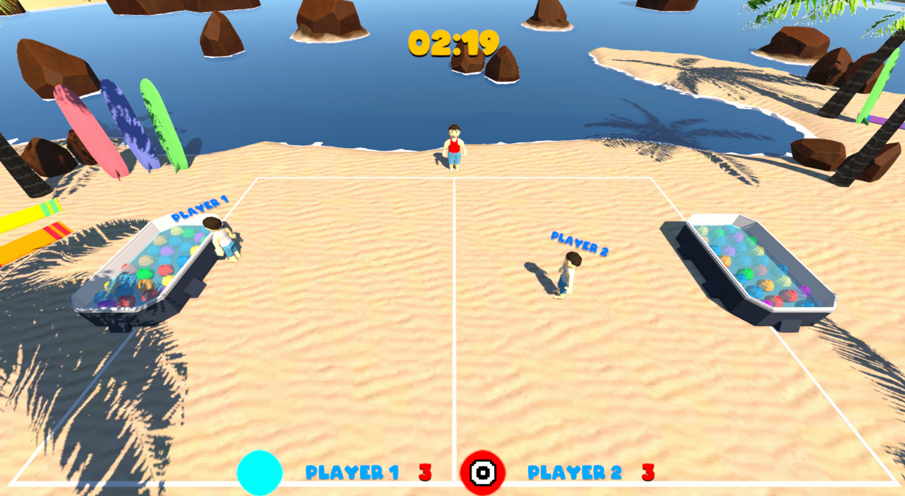
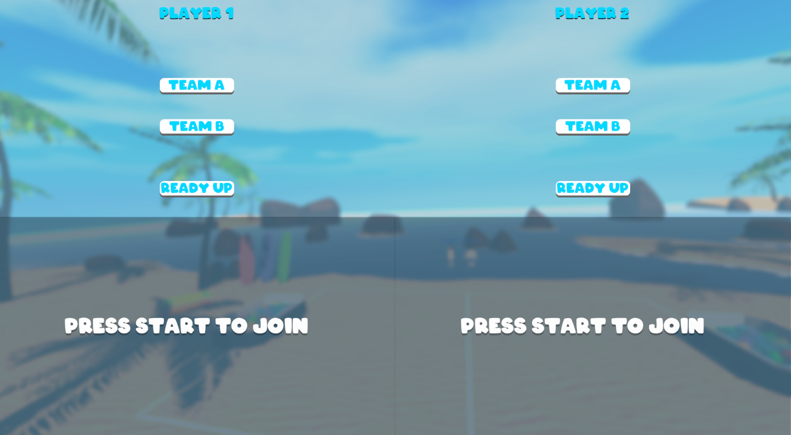
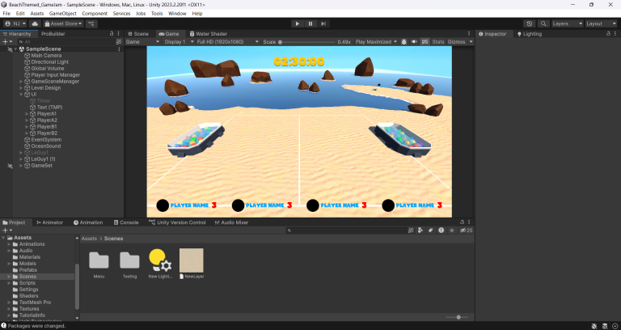
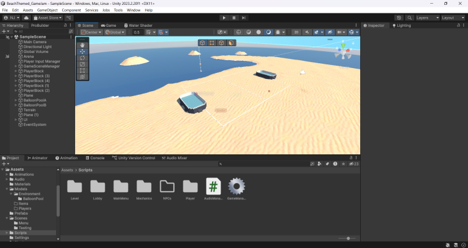

Fast multiplayer design.
Splash Ball was created with Curtis Gorman for the Game Design Club's first game jam. It is a local multiplayer water-balloon party game built around quick rounds and immediate interaction.


Programming under a deadline.
My primary responsibility was programming. The short jam window forced us to prioritize the core game experience, work from a shared GDD, and continuously test whether a feature was worth keeping.


Cutting scope is part of design.
The project reinforced how valuable rapid playtesting is. A mechanic that looks good on paper still needs to earn its place in a short game.